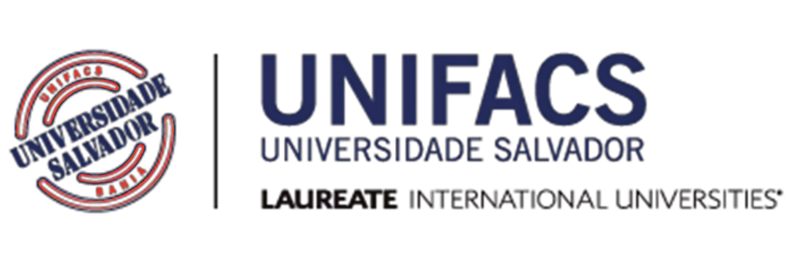

<div class="modal fade" id="academicFormationModal" tabindex="-1" role="dialog" aria-hidden="true">
    <div class="modal-dialog modal-xl" role="document">
      <div class="modal-content">
        <div class="modal-header">
          <button type="button" class="btn btn-danger" data-bs-dismiss="modal" aria-label="Close">
            <span aria-hidden="true" class="fa fa-close "></span>
          </button>
        </div>
        <div class="modal-body">
            <div id="carouselExampleCaptions"  class="carousel slide">
                <div class="carousel-indicators ">
                  <button type="button" class="bg-dark active" data-bs-target="#carouselExampleCaptions" data-bs-slide-to="0"  aria-current="true" aria-label="Slide 1"></button>
                  <button type="button" class="bg-dark" data-bs-target="#carouselExampleCaptions" data-bs-slide-to="1" aria-label="Slide 2"></button>
                  </div>
                <div class="carousel-inner px-5 py-5 ">
                    <div class="container px-5 py-5 ">
                  <div class="carousel-item active ">
                    <div class="row">
                    <div class="col-12 col-lg-3">
                    
                    </div>
                    <div class="col-12 col-lg-9">
                      <h5>Desenvolvimento de Sistema (SENAI) 2019 – 2021 </h5>
                      <ul class="list-group">
                        <li class="list-group-item list-group-item-secondary"><strong>Lógica de Programação:</strong> Aborda algoritmos e fluxogramas, tipos de linguagem, operadores lógicos e matemáticos, variáveis e seus tipos, padrão de escrita (CamelCase), IDEs, módulos e funções.</li>
                        <li class="list-group-item list-group-item-secondary"><strong>Desenvolvimento de Sistemas:</strong> Explora linguagem e padrão de escrita Java, POO (Programação Orientada a Objetos), herança, polimorfismo, encapsulamento, classes abstratas e interface. Inclui projeto de desenvolvimento de sistema com Banco de Dados MySQL.</li>
                        <li class="list-group-item list-group-item-secondary"><strong>Desenvolvimento Sistemas para Dispositivos Móveis:</strong> Aborda o desenvolvimento de aplicativos nativos, PWA (Progressive Web App) e Híbridos, ferramentas (IDE), principais linguagens de desenvolvimento para dispositivos móveis (Java, JavaScript, Flutter, Dart), depuração, frameworks, arquitetura e modelos, multithreading, normas e procedimentos, padrões de projeto, integração com banco de dados, integração entre sistemas, aplicação cliente/servidor e acesso à rede de dados utilizando tecnologia de dispositivos móveis.</li>
                        <li class="list-group-item list-group-item-secondary"><strong>Banco de Dados:</strong> Compreende conceitos de sistemas de banco de dados e suas características, armazenamento de dados, arquitetura (relacional e não-relacional), modelagem de dados, definições, modelo conceitual, conceitos e arquitetura, modelagem de dados usando o modelo entidade / relacionamento, modelo lógico e físico, definições, restrições, design, dependência funcional, normalização, gerenciamento do banco de dados, sistemas de gerenciamento de banco de dados (SGBD), segurança, backups, manipulação de banco de dados, ferramentas (WorkBench, phpmyadmin, pgAdmin, etc.), comandos DDL, DML, DCL, criação e utilização de Triggers, stored procedures, views e suas funcionalidades.</li>
                        <li class="list-group-item list-group-item-secondary"><strong>Programação WEB:</strong> Inclui tópicos como wireframes, frameworks, HTML5, CSS4, JavaScript (Jquery e Node), Bootstrap4, PHP, padrão MVC, conexão com banco de dados PHP e projeto fullstack padrão MVC + Banco de Dados MySQL.</li>
                        <li class="list-group-item list-group-item-secondary"><strong>Testes de Sistemas:</strong> Explora a importância dos testes para o desenvolvimento de software, conceitos básicos, fases da atividade de teste, técnicas e critérios de teste, características e limitações, fundamentos de testes, planejamento, desenho dos testes, execução, monitoração e controle, avaliação dos resultados, testes de funcionalidade, usabilidade, confiabilidade, desempenho, manutenabilidade, testes da caixa branca (teste de unidade, teste de integração), testes da caixa preta (teste de sistema, teste de aceitação), criação e organização de relatórios de testes e ferramentas de automação de testes.</li>
                        <li class="list-group-item list-group-item-secondary"><strong>Desenvolvimento de Sistemas II:</strong> Aborda padronizações de código, reutilização de código, técnicas de testes para validação da programação, padrões de projetos com estudo e aplicações, criação de documentação técnica de projetos web.</li>
                        <li class="list-group-item list-group-item-secondary"><strong>Interface Homem-Computador:</strong> Inclui entendimento de interface e qualidade (ISO 25010), stakeholders, design, funcionamento da mente humana, design UX, design UI, design thinking e princípios e aplicações de layout.</li>
                        <li class="list-group-item list-group-item-secondary"><strong>Modelagem de Sistemas:</strong> Aborda sistemas de produção como LEAN (Toyotismo) e XP (eXtreme Programming).</li>
                        <li class="list-group-item list-group-item-secondary"><strong>Informática Aplicada:</strong> Oferece conhecimentos básicos do Pacote Office (Excel, Word, PowerPoint e ferramentas similares open source) e aplicativos para organização (Trello, Evernote, LucidChart, Toggl, Dropbox, Google Drive).</li>
                        <li class="list-group-item list-group-item-secondary"><strong>Fundamento da Tecnologia da Informação:</strong> Explora noções básicas de hardware.</li>
                      </ul>
                    </div>
                    </div>
                  </div>
                  <div class="carousel-item">
                    <div class="row">
                        <div class="col-12 col-lg-3 pt-2 mt-5">
                        
                        </div>
                        <div class="col-12 col-lg-9">
                          <h5>Ciência da computação (UNIFACS) 2021 – Cursando</h5>
                          <ul class="list-group " >
                            <li class="list-group-item list-group-item-secondary"><strong>Introdução à Computação:</strong> Introdução aos conceitos básicos de computação, história da computação, sistemas numéricos, lógica booleana e algoritmos.</li>
                            <li class="list-group-item list-group-item-secondary"><strong>Programação I:</strong> Introdução à programação com a linguagem C, incluindo conceitos básicos de programação orientada a objetos.</li>
                            <li class="list-group-item list-group-item-secondary"><strong>Cálculo I:</strong> Estudo dos conceitos fundamentais do cálculo diferencial e integral.</li>
                            <li class="list-group-item list-group-item-secondary"><strong>Sistemas Operacionais:</strong> Estudo dos conceitos básicos de sistemas operacionais, incluindo gerenciamento de processos, memória e dispositivos de entrada / saída.</li>
                            <li class="list-group-item list-group-item-secondary"><strong>Banco de Dados I:</strong> Introdução aos conceitos básicos de banco de dados, incluindo modelagem conceitual e lógica, álgebra relacional e SQL.</li>
                            <li class="list-group-item list-group-item-secondary"><strong>Programação II:</strong> Continuação do estudo da programação com a linguagem C, incluindo estruturas de controle, vetores e matrizes.</li>
                            <li class="list-group-item list-group-item-secondary"><strong>Cálculo II:</strong> Continuação do estudo dos conceitos fundamentais do cálculo diferencial e integral.</li>
                            <li class="list-group-item list-group-item-secondary"><strong>Estrutura de Dados:</strong> Estudo das estruturas fundamentais de dados utilizadas em programação, incluindo listas encadeadas, pilhas, filas e árvores.</li>
                            <li class="list-group-item list-group-item-secondary"><strong>Banco de Dados II:</strong> Continuação do estudo dos conceitos básicos de banco de dados, incluindo modelagem física, normalização e otimização.</li>
                            <li class="list-group-item list-group-item-secondary"><strong>Engenharia de Software I:</strong> Introdução aos conceitos básicos de engenharia de software, incluindo ciclo de vida do software, análise e projeto orientado a objetos.</li>
                          </ul>
                        </div>
                        </div>
                  </div>
                </div>
                <button class="carousel-control-prev pr-2 mr-5" type="button" data-bs-target="#carouselExampleCaptions" data-bs-slide="prev">
                    <i style="font-size: 50px" class="fa fa-chevron-left text-black"></i>
                  <span class="visually-hidden">Previous</span>
                </button>
                <button class="carousel-control-next ml-5" type="button" data-bs-target="#carouselExampleCaptions" data-bs-slide="next">
                    <span style="font-size: 50px" class="fa fa-chevron-right text-black"></span>
                  <span class="visually-hidden">Next</span>
                </button>
            </div>
            </div>
            </div>
        <div class="modal-footer">
          <button type="button" class="btn btn-danger" data-bs-dismiss="modal">Close</button>
        </div>
      </div>
    </div>
  </div>